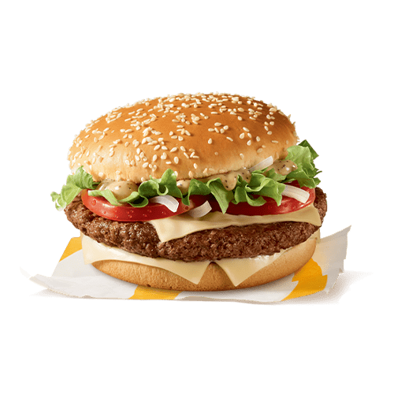
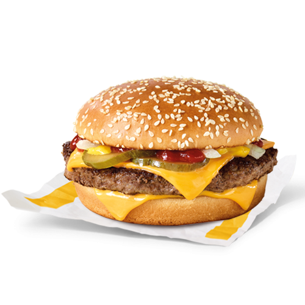

<section>
  <article class="container">

<!--    <div class="card mb-3">-->
<!--      <div class="row g-0">-->
<!--        <div class="col-md-4">-->
<!--          -->
<!--        </div>-->
<!--        <div class="col-md-8">-->
<!--          <div class="card-body">-->
<!--            <h5 class="card-title">Tasty Burger</h5>-->
<!--            <p class="card-text">O felie de carne de vită tocată, preparată pe grătar, asezonată cu sare și piper, sos Big Tasty și trei felii de brânză topită cu Emmentaler, salată crocantă Big Tasty, roșie proaspătă și ceapă, chiflă Big Tasty cu susan.</p>-->
<!--          </div>-->
<!--        </div>-->
<!--      </div>-->
<!--    </div>-->


<!--    <div class="card mb-3">-->
<!--      <div class="row g-0">-->
<!--        <div class="col-md-4">-->
<!--          -->
<!--        </div>-->
<!--        <div class="col-md-8">-->
<!--          <div class="card-body">-->
<!--            <h5 class="card-title">Quarter Pounder</h5>-->
<!--            <p class="card-text">Îți prezentăm un burger căruia n-ai cum să-i reziști: o felie mare de carne suculentă însoțită de două felii aurii de brânză topită cu Cheddar, castraveți murați, ceapă albă, ketchup și muștar. Toate așezate atent într-o chiflă pufoasă, presărată cu susan.</p>-->
<!--          </div>-->
<!--        </div>-->
<!--      </div>-->
<!--    </div>-->
  </article>


</section>


